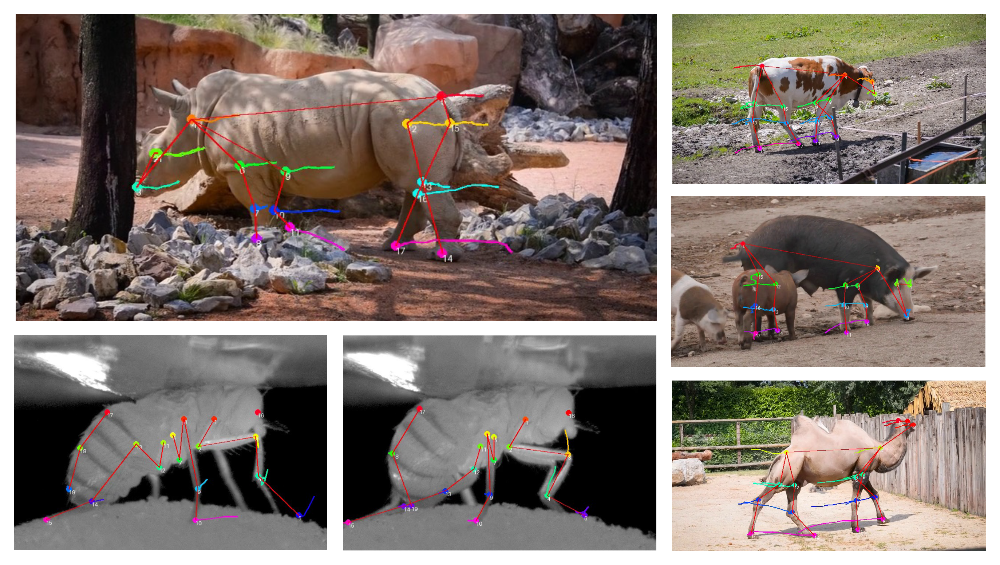
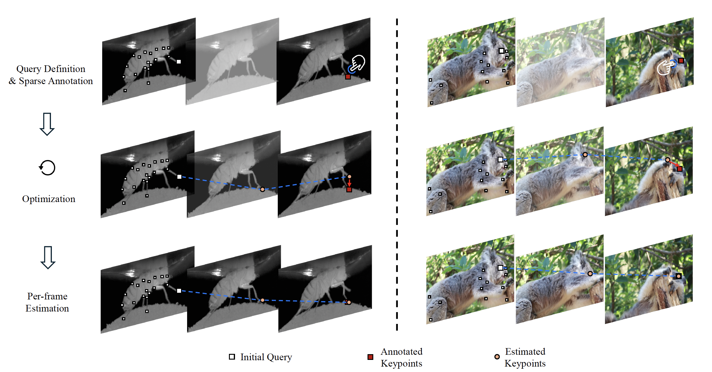
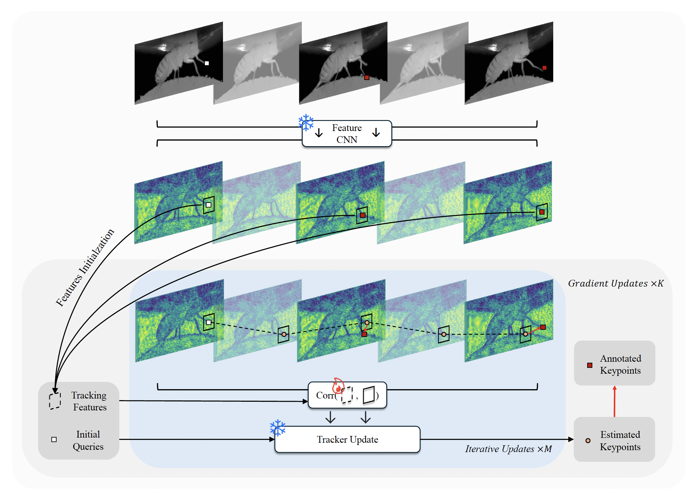

TLDR: We present a new pipeline for dense animal pose annotation in videos by optimizing point trackers.
Introduction
Automatically estimating animal poses from videos is important
for studying animal behaviors. Existing methods
do not perform reliably since they are trained on datasets
that are not comprehensive enough to capture all necessary
animal behaviors. However, it is very challenging to
collect such datasets due to the large variations in animal
morphology. In this paper, we propose an animal pose labeling
pipeline that follows a different strategy, i.e. test time
optimization. Given a video, we fine-tune a lightweight appearance
embedding inside a pre-trained general-purpose
point tracker on a sparse set of annotated frames. These
annotations can be obtained from human labelers or off-the-shelf pose detectors. The fine-tuned model is then applied
to the rest of the frames for automatic labeling. Our
method achieves state-of-the-art performance at a reasonable
annotation cost. We believe our pipeline offers a valuable
tool for the automatic quantification of animal behavior.
System Overview
Our pipeline consists of three stages.
First, users define query keypoints and provide sparse annotations.
Our model is then optimized w.r.t. these annotations. Finally, the
optimized model is applied to the remaining frames for dense pose
labeling. We show two examples from the DeepFly3D (left) and
DAVIS-Animals (right) datasets.

Our key idea is to optimize the tracking features for each query point \(\hat{\phi}_0\) on a single video while keeping other components fixed. These optimized features essentially serve as an "appearance embedding" that encodes video-specific appearance information, hence greatly helping improve tracking performance. Below is an overview of our optimization process, which updates tracking features based on sparse annotations over several iterations. Please refer to our paper for more details.

We demonstrate labeling a goat sequence using our custom web interface. The top shows our method, and the bottom shows manual frame-by-frame labeling. Our approach significantly improves efficiency and reduces jitter compared to manual annotation and outperforms CoTracker3 [3] without refinement in accuracy and stability.
@inproceedings{TBD,
}